A · Classical editorial
Ivory on near-black in Iowan and Didot, hairline rules and small caps. Brass marks what’s live; Ken writes in a paler gilt.
B · Quiet minimal
Flat graphite and system sans, a narrow column with space around it. Oxblood marks only what’s live; Ken in pale rose.
C · Paper
Warm off-white with ink type: Charter to read, sans for controls. Red marks what’s live; Ken’s verdict reads like a red-brown pen note.
D · Matte dark
Today’s crimson on red-black without the gloss, glass, dither or rain, and a size larger. Crimson for live; Ken in pale rose instead of teal.
Home
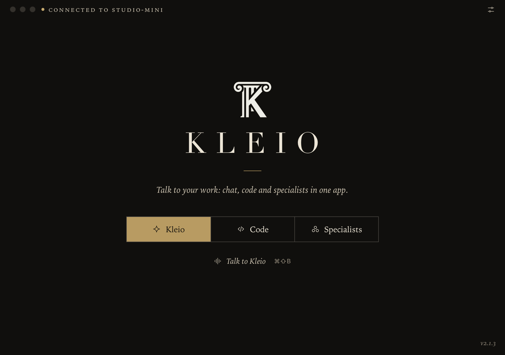
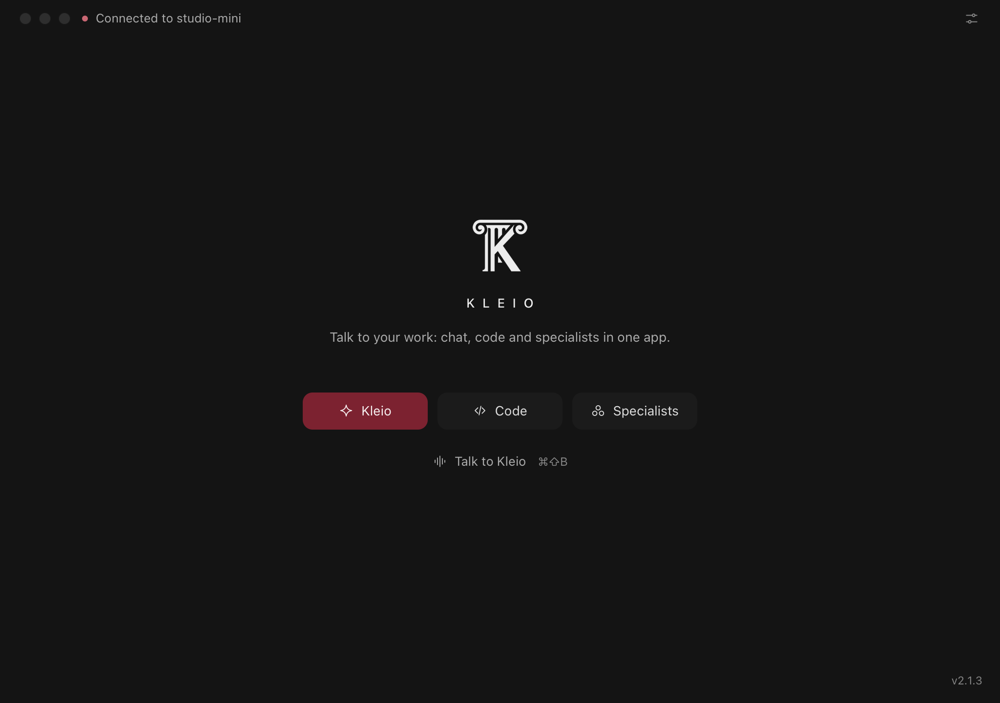
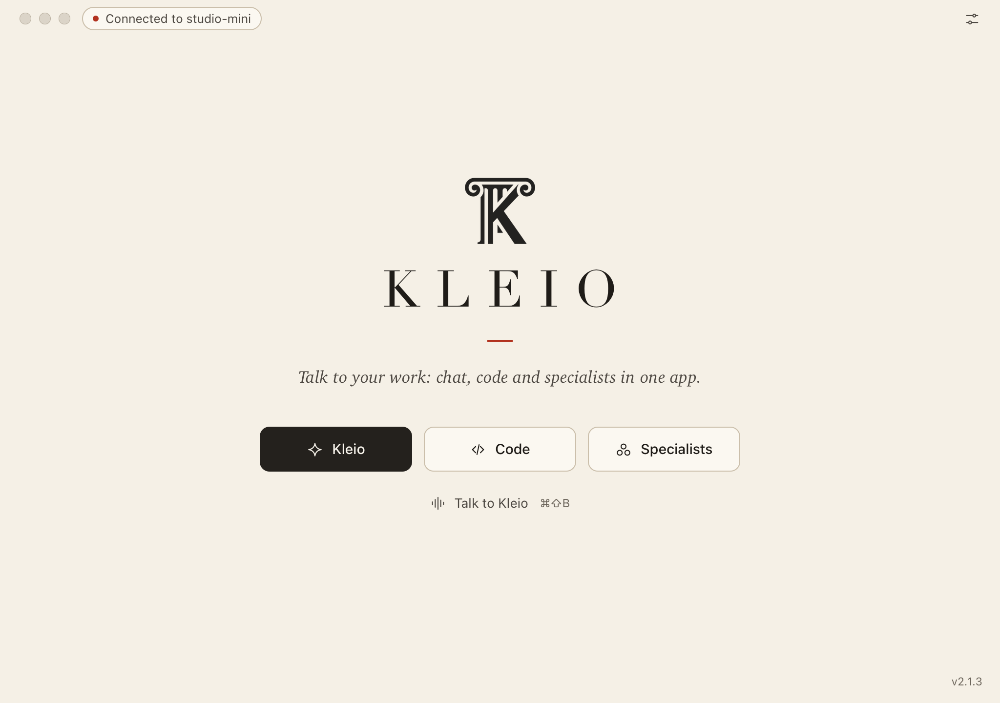
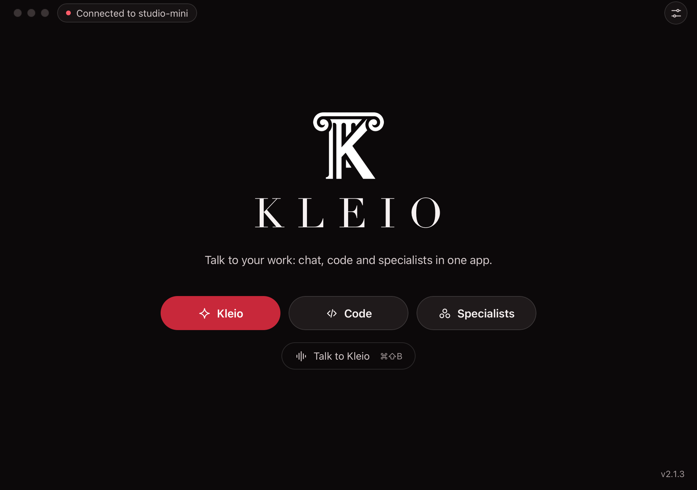
Kleio chat
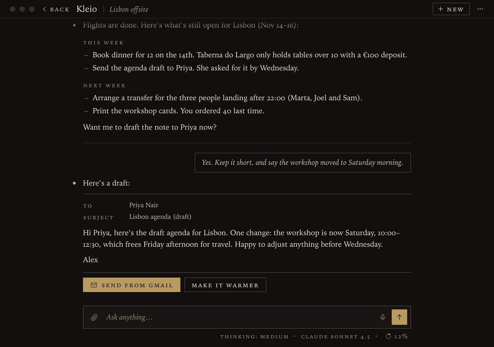
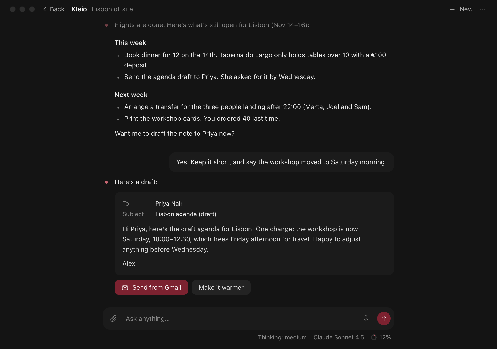
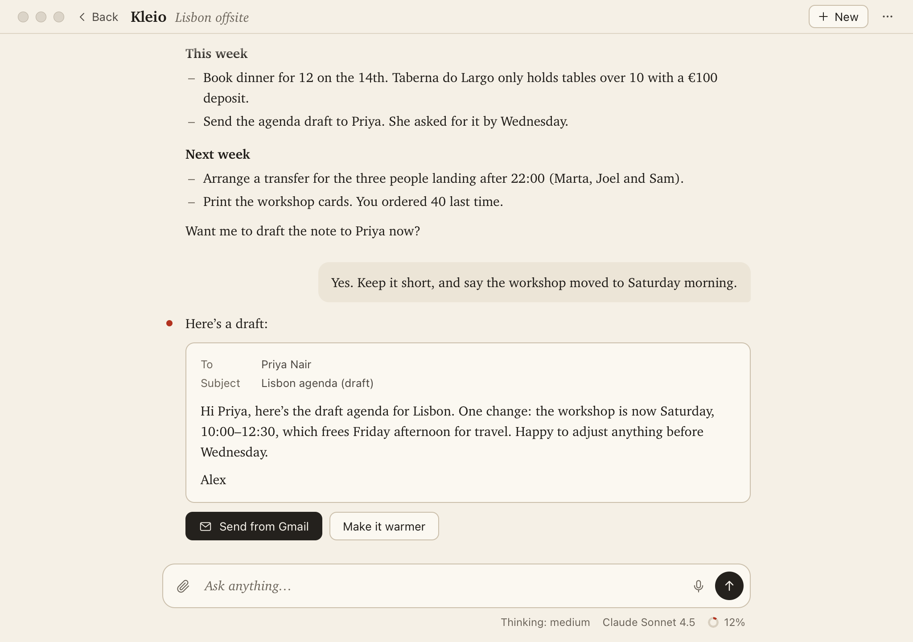
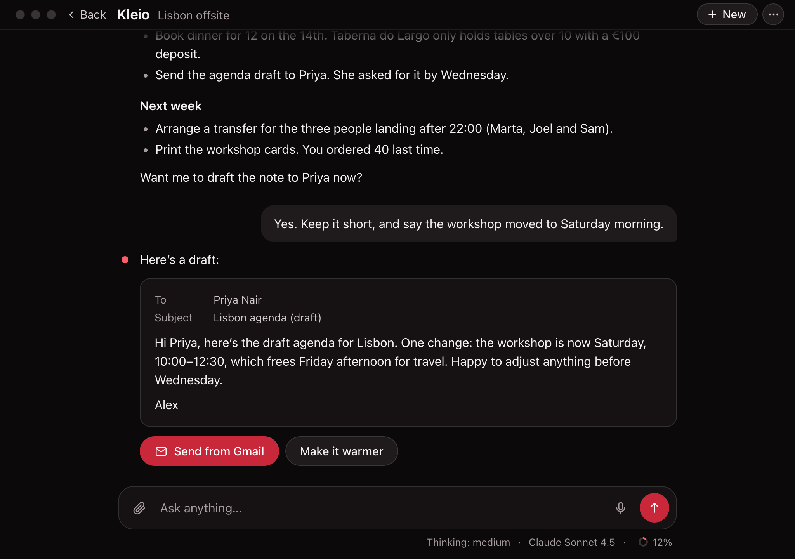
Code
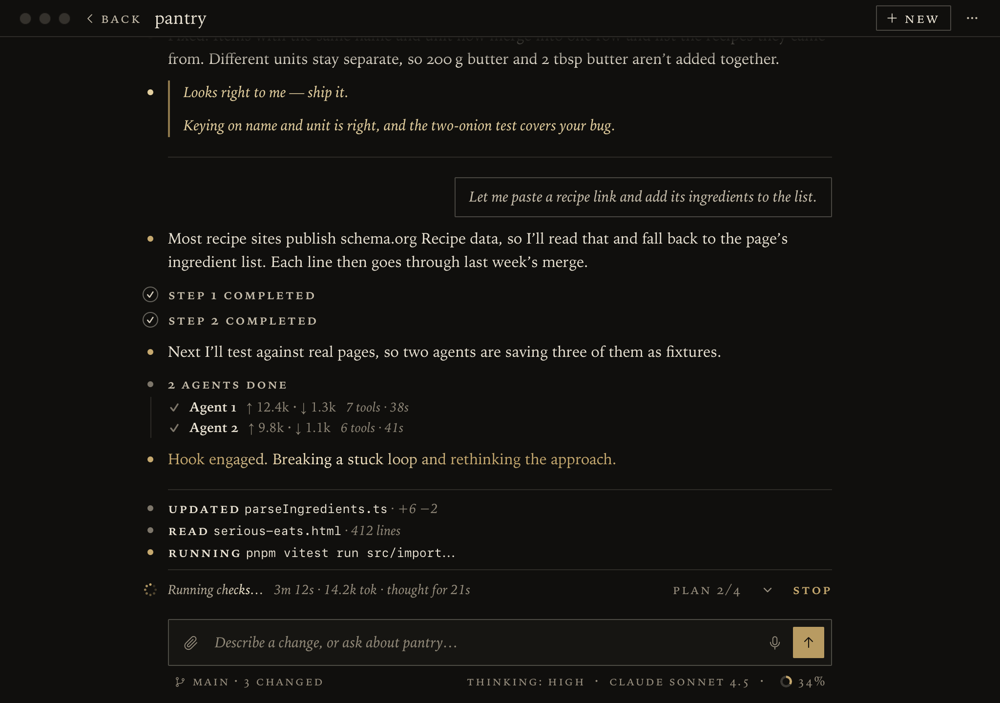
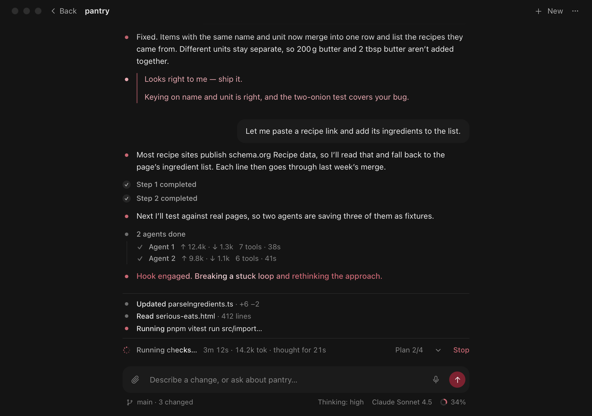
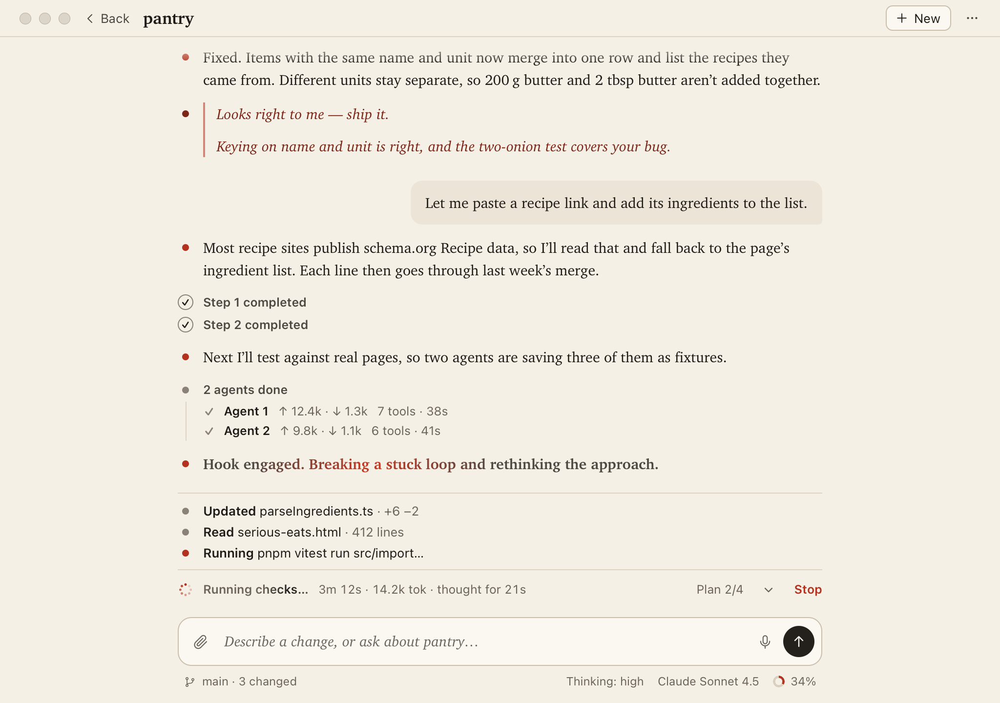
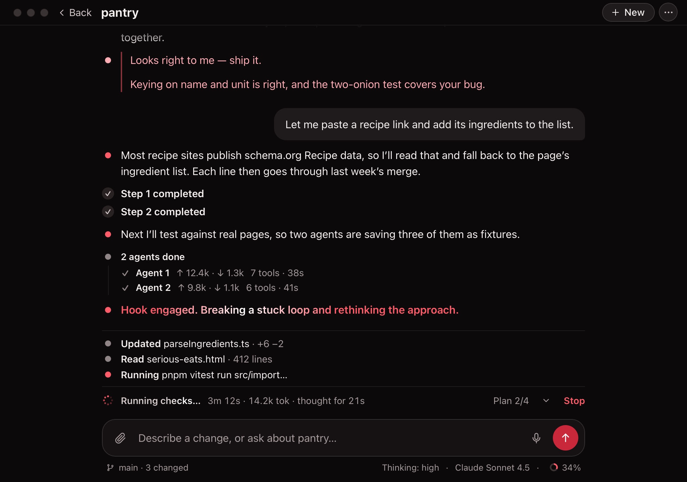